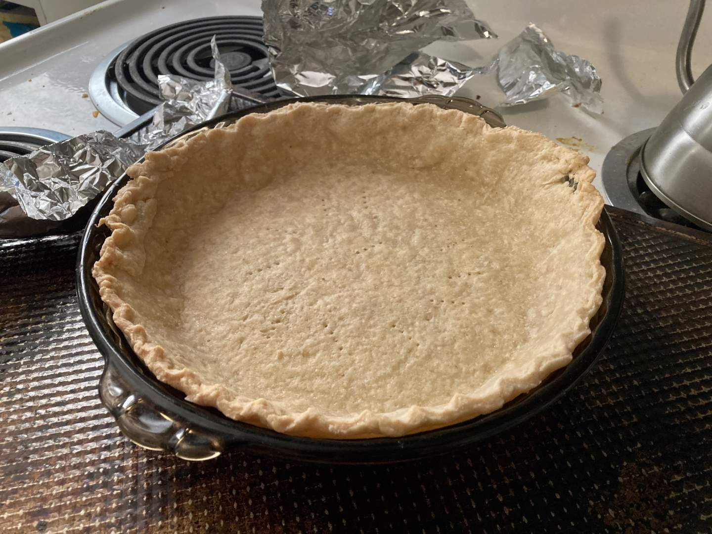
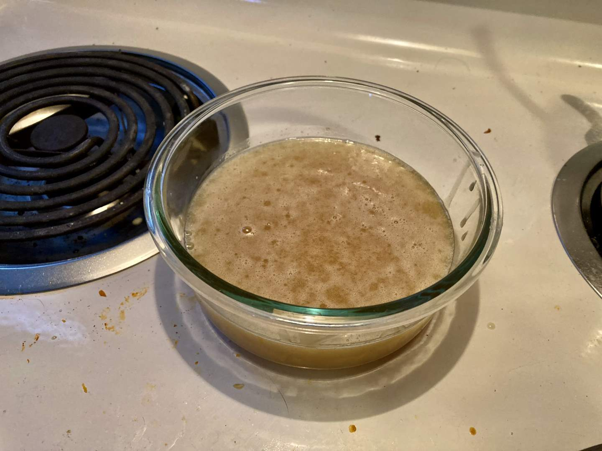
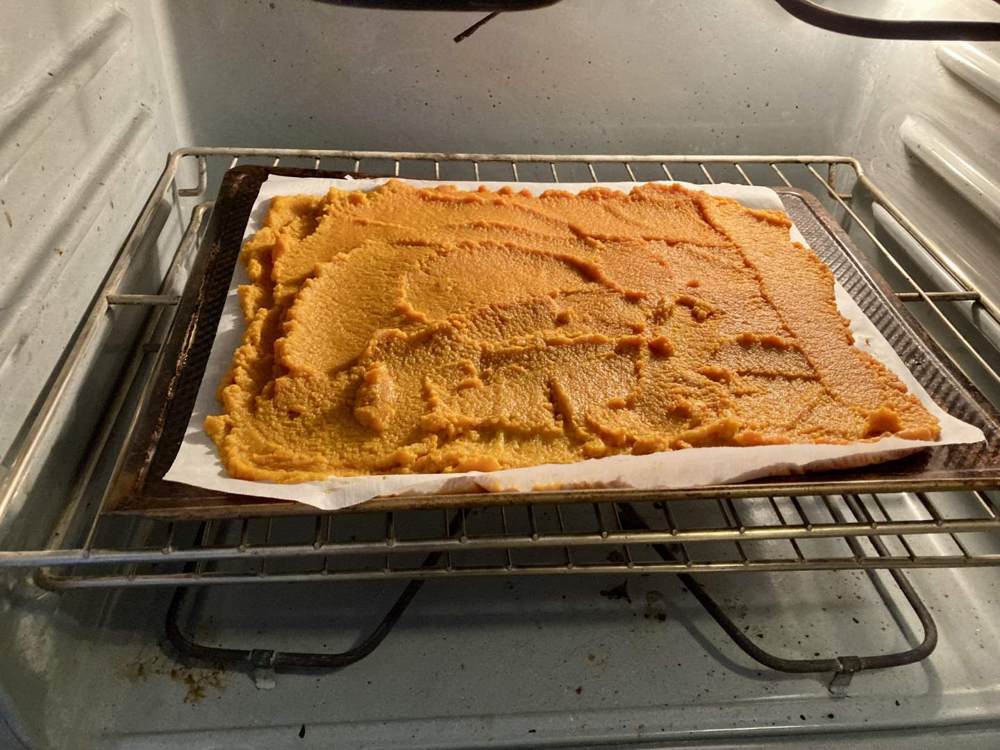
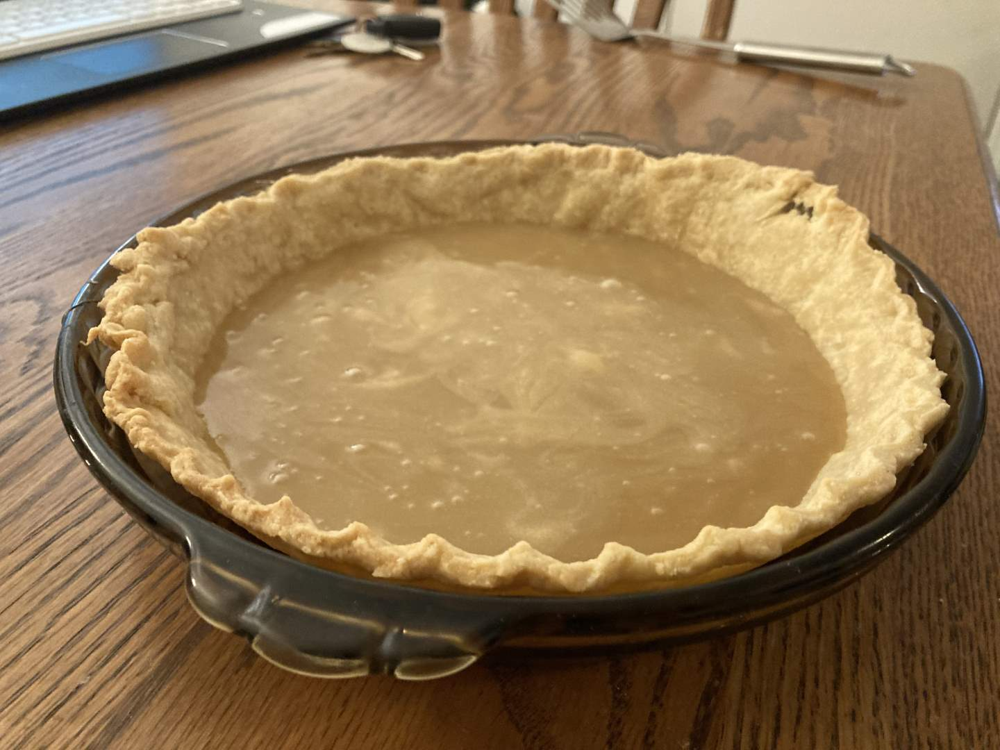
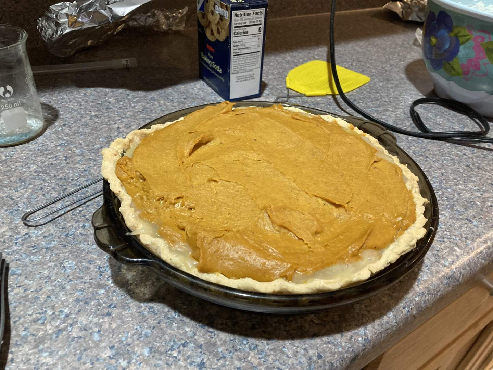
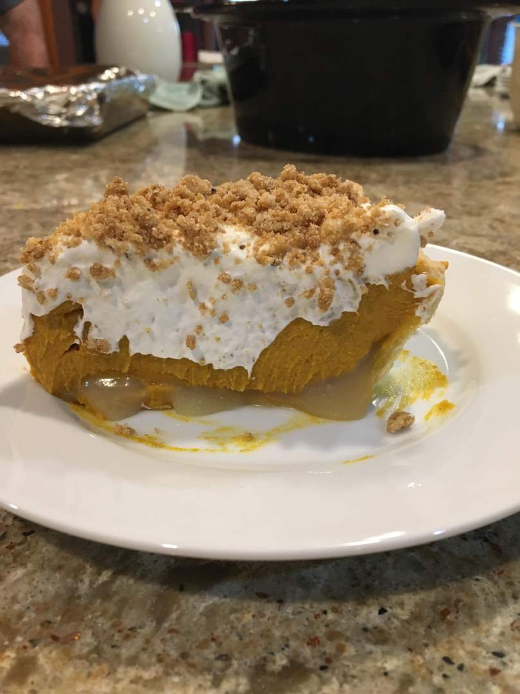

Pie 22: Pumpkin Caramel
2023-11-23Recipe is from Milk Bar.
Taste:
Difficulty:
Vibes:
Suggested pairings: turkey, rolls, mashed potatoes, sweet potato casserole, etc.
After all the work I put into last week’s persimmon pie, the lackluster result had me hoping for an easy win this week. Thanksgiving was around the corner and my family was expecting a pie from us. Since the beginning of this project, the plan was to make a pumpkin pie the week of Thanksgiving. I had planned to make a more traditional recipe, but the Sunday before the holiday a friend sent me a social media video of a multilayered cold pumpkin caramel pie that looked pretty delicious and was absolutely more visually impressive than the standard squash dish.
The recipe called for the preparation of five layers separately: crust, caramel, pumpkin ganache, whipped cream, and streusel. None of our other pies had more than four, setting this one up to be the most complex yet (without the sheer difficulty of last week’s persimmon pulp extraction).
The blind-baked butter crust called for a quarter cup of cornmeal, giving it a mildly unpleasant gritty texture. KB and I both agreed in the end that it would have been better to use a normal crust recipe though.
This was the first caramel sauce I’ve ever made from scratch and I was too cautious. I didn’t want it to burn! After the sauce had cooled I realized it was a bit thinner than the recipe expected. I reheated and cooked it a bit more, but I had already added dairy and additionally had to worry about curdling. The sauce never got as thick as I had hoped.
The pumpkin layer was a ganache made of roasted pumpkin (two puree cans, roasted until the mass was halved), a bag of room-temperature white chocolate chips, and a cup of boiling cream. The mixture came together nicely and looked quite similar to a standard pumpkin pie filling in color, but was much more viscous.
In addition to the pumpkin puree, the recipe called for a streusel made with oats, flour, brown sugar, and butter. I roasted the concoction until golden brown per instructions. Tasting it after it cooled, I realized it was one of the worst streusels I’ve ever made. Unwilling to throw the crumbs away, I added more brown sugar and cinnamon.
Putting the pie together required a cooling period between each layer. To ensure maximum firmness, I cooled the pie overnight in the fridge after adding the caramel and the ganache. At my parents’ house after Thanksgiving lunch (with both sets of grandparents!) I whipped up the cream and spread it over the pie before sprinkling on the streusel. Honestly, it looked great. Too bad I didn’t take a picture of the finished pie.
The pumpkin caramel pie was well-received. All my relatives liked it, including my mother--who normally doesn’t even try pumpkin dishes. However, I can’t help but think that it could have been much better. More typical crust and streusel recipes with a thicker caramel would be my first steps. Even beyond that, I just can’t shake the feeling that this recipe was created to be visually appealing in social media videos, with taste and texture as secondary concerns. That’s not to say I don’t recommend the pie! Visual appeal is important for a dessert. I would offer this counsel to anyone who wants to try it: Use a different crust (perhaps this) and streusel and don’t let your caramel be too thin!
